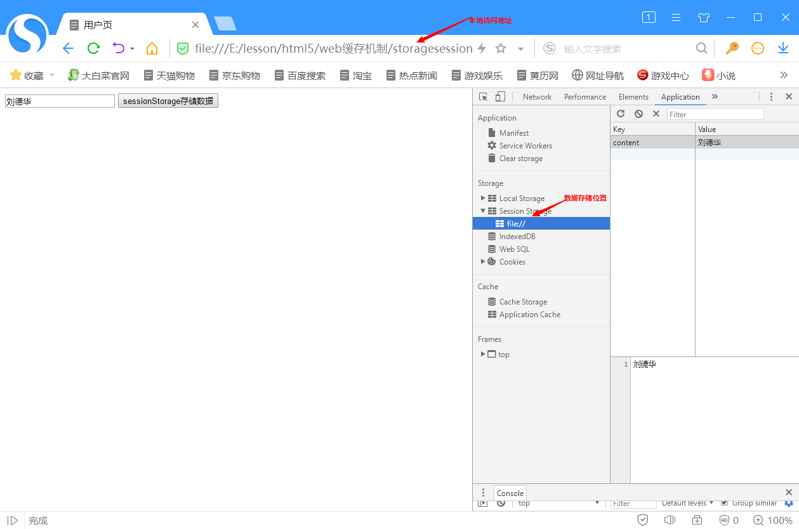
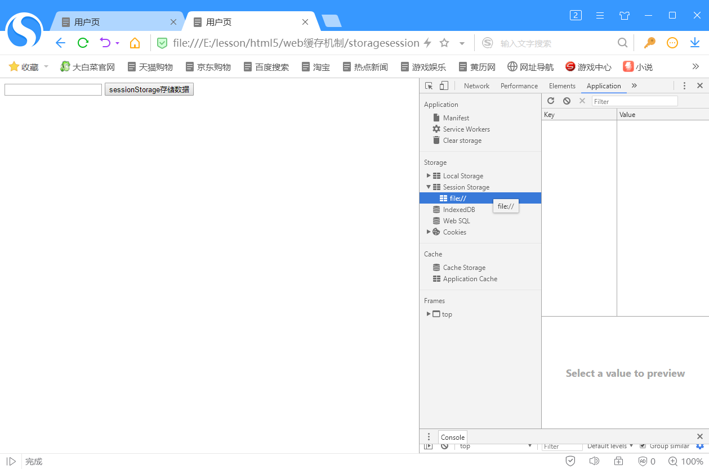
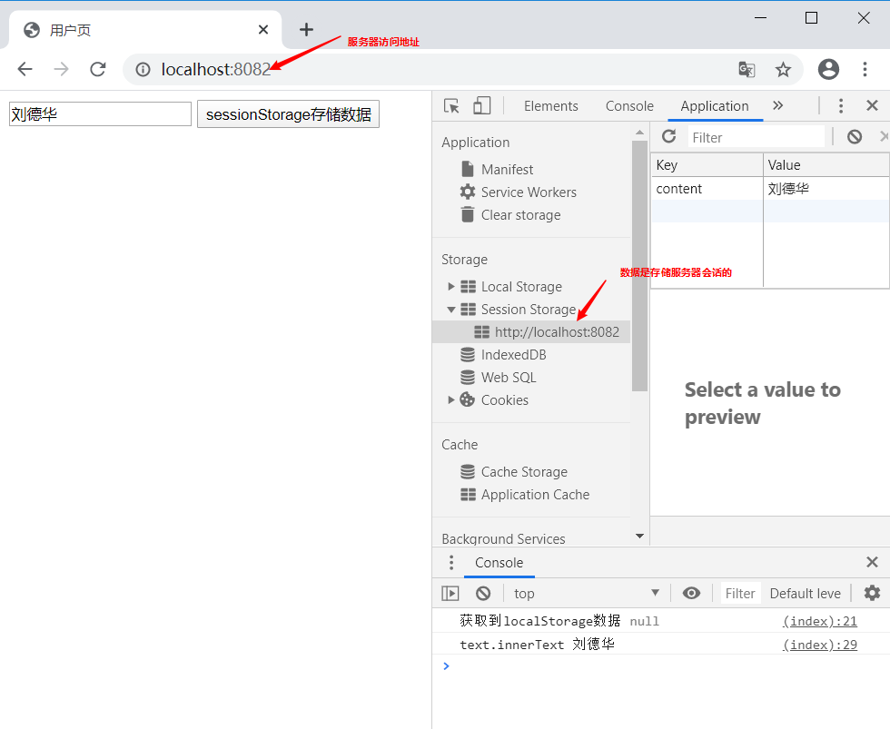
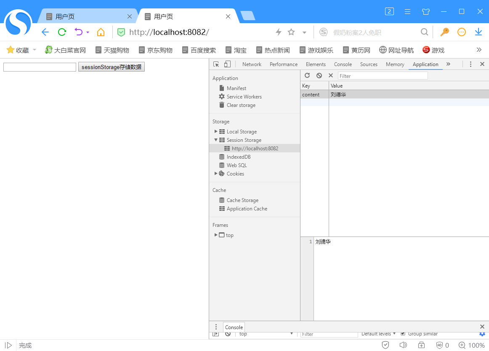
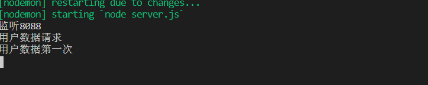
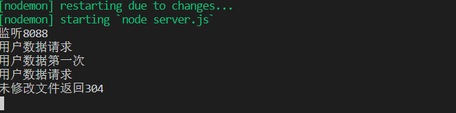
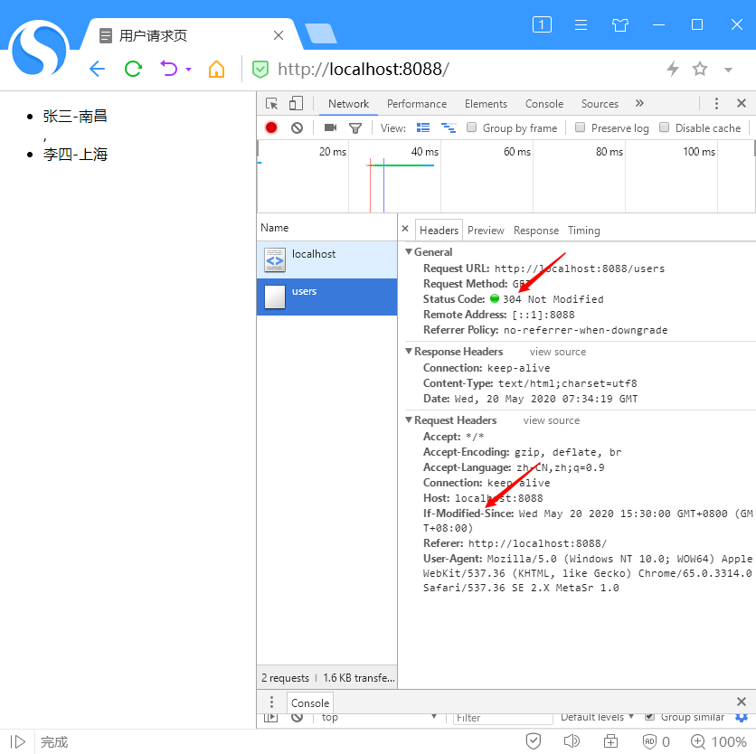
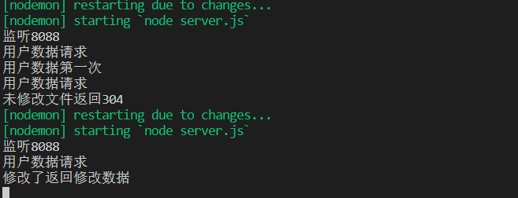
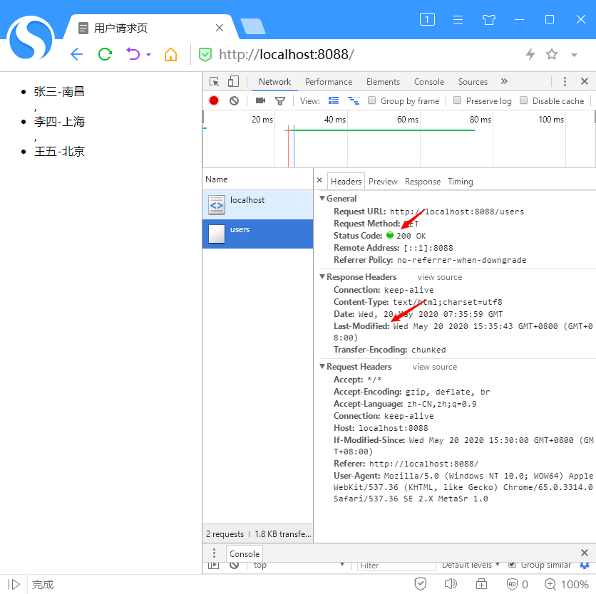

web存储机制
storage类型介绍
storage类型是来存储名值对儿，是保存在浏览器端的，存储为key-value形式的。
key:作为存储数据的标识（唯一且不可重复）
value：存储数据的内容（number/string）
该类型的实例对象有关于存储的方法如下：
（1） clear()：删除所有值。
（2） getItem():根据指定的名字（key）获取对应的值。
（3） key(index):获取index位置处的值的名字（key）。
（4） removeItem():删除由name指定的名值对儿。
（5） setItem(name,value): 为指定的name 设置一个对应的值。
（6） Storage.length ：返回一个整数，表示存储在 Storage 对象中的数据项数量。这个是 Storage 对象的一个属性，而且是一个 只读 属性
storage特性
该类型只能存储字符串,非字符串的数据会在存储之前转换成字符串。
sessionStorage对象
sessionStorage对象存储是web stroage机制的一种，该对象会给每一个给定的源维持一个独立的存储区域，该区域在页面会话期间可用（即只要浏览器处于打开状态，包括页面重新加载和恢复）
sessionStorage对象是绑定在服务器会话的，所以当文件在本地运行的时候是不能跨页面访问的，使用服务器地址访问时才能多页面访问。
在另一个页面打开是找不到这个值的：

开启服务器访问：

再次使用服务器地址访问的时候：

localStorage对象
localStorage也是web Stroage存储机制的一种，localStorage对象是根据glocalStorage对象设计出来的简化，glocalStorage的使用是要指定哪些域名可以访问该数据，是通过方括号标记使用该属性来实现的：
//存数据
glocalStorage["baidu.com"].name="刘德华"
//取数据
var name=glocalStorage["baidu.com"].name听网上说是为了安全性然后在HTML5的规范中用localStorage取代了glocalStorage不能自己设置域名，值使用localStorage对象时就将当前域名加入。规则设计出来就是方便我们的使用的，显然localStorage比之前的使用起来更简单了。
我自己的理解根据该用户不删除数据，数据将会一直保存在磁盘里的属性，可以设置收藏列表，用户爱好等等。
//存数据
glocalStorage.setItem('content', '刘德华');
//取数据
glocalStorage.getItem('content');两者的比较
不同点
数据存储时长
sessionStorage:数据只保持在浏览器关闭
localStorage：用户不删除数据，数据将会一直保存在磁盘里
访问规则不同
localStorage：只要在相同的协议、相同的主机名、相同的端口下，就能读取和修改到同一份 localStorage 存储的数据。
sessionStorage：除了协议、主机名、端口外，还要求在同一窗口下。
相同点
- 存储大小都不能超过5M。
Http缓存(协商缓存)
Last-Modified与if-Modified-Since
Last-Modified：响应头，资源最新修改时间，由服务器告诉浏览器。
if-Modified-Since：请求头，资源最新修改时间，由浏览器告诉服务器(其实就是上次服务器给的Last-Modified，请求又还给服务器对比)，和Last-Modified是一对，它两会在服务器端进行对比。
请求过程
第一次请求数据
浏览器：服务器服务器，我现在需要一个users.json的文件，你找到了给我，顺便给我文件修改时间！
服务器：行，文件修改时间我给你，到时候文件过期了咱两核对文件修改时间，对得上我就不找了，返回a.txt+Last-Modified。
第二次请求数据
浏览器：服务器服务器，我还需要一个users.json的文件，我把这个文件上次修改时间发你if-Modified-Since，你对比一下文件最近有不有修改！
服务器：ok，我帮你找一下。服务器将if-Modified-Since与Last-Modified做了个对比。
if-Modified-Since 与Last-Modified不相等，服务器查找了最新的users.json，同时再次返回全新的Last-Modified。
if-Modified-Since 与Last-Modified相等，服务器返回状态码304，文件没修改过，你还是用你的本地缓存。
Etag与If-None-Match（协商缓存）
请求过程
Etag：响应头，由服务器设置告诉浏览器。
if-None-Match：请求头，由浏览器告诉服务器(其实就是上次服务器给的Etag)，和Etag是一对，它两也会在服务器端进行对比。
浏览器：服务器服务器，我现在需要一个users.json的文件，你找到了给我！
服务器：你又来了，文件我找给你，我给你一个Etag(文件版本号)，到时候你再来找这个资源的时候把这个带上，省的我再找给你，返回a.txt+Etag。
第二次请求数据
浏览器：服务器服务器，我又需要users.json文件了，我把你发给我的Etag放在If-None-Match里面了，你对比一下最近这个文件有不有修改！
服务器：ok，我帮你找一下。服务器将Etag与If-None-Match做了个对比。
Etag与If-None-Match不相等，服务器查找了最新的users.json，同时再次返回全新的Etag(文件版本号)。
Etag与If-None-Match相等，服务器返回状态码304，文件没修改过，你还是用你的本地缓存。
Cache-Control（强缓存）
**Cache-Control** 通用消息头字段，被用于在http请求和响应中，通过指定指令来实现缓存机制。缓存指令是单向的，这意味着在请求中设置的指令，不一定被包含在响应中。
使用方法：res.setHeader('Cache-Control', 'max-age=20')
解释：浏览器访问起止20s（请求不会到达服务端）不会执行服务端。会将内容保存在缓存中，从内存/磁盘缓存中提取数据。
Http头部缓存和web缓存例子
模拟前端请求显示数据
<ul id="users"></ul>
<script>
window.onload = function() {
const users = JSON.parse(localStorage.getItem('usersdata'));
console.log("users", users)
const uluser = document.querySelector('#users');
if (users) {
uluser.innerHTML = users.map(user =>
`
<li>
${user.username}-${user.place}
</li>
`
)
}
fetch('/users')
.then(data => data.json())
.then(data => {
localStorage.setItem('usersdata', JSON.stringify(data)) //需要存储字符串
console.log("users请求")
uluser.innerHTML = data.map(user =>
`
<li>
${user.username}-${user.place}
</li>
`
)
})
}
</script>模拟服务器接收与发送
const http = require('http');
const fs = require('fs');
const users = require('./users.json')
http.createServer((req, res) => {
let status = fs.statSync('users.json');//获取文件的状态
if (req.url == '/') {
res.writeHead(200, { "Content-Type": "text/html;charset=utf8" })
fs.createReadStream('./users.html')pipe(res);//通过流返回显示页面
} else if (req.url == '/users') {
console.log("用户数据请求")
if (req.headers['if-modified-since']) {
if (req.headers['if-modified-since'] == status.mtime) {//判断请求中的修改时间与文件的修改时间是否相同
console.log("未修改文件返回304")
res.writeHead(304, { "Content-Type": "text/html;charset=utf8" });//304 Not Modified
res.end();
return;
} else {
res.setHeader('Last-Modified', status.mtime);
res.writeHead(200, { "Content-Type": "text/html;charset=utf8" });
console.log('修改了返回修改数据')
res.end(JSON.stringify(users))
return;
}
}
console.log("用户数据第一次")
res.setHeader('Last-Modified', status.mtime);
res.writeHead(200, { "Content-Type": "text/html;charset=utf8" });
res.end(JSON.stringify(users))
} else {
res.end("null")
}
}).listen('8088', () => {
console.log('监听8088')
})结果分析
第一次请求数据服务器给我们返回200状态码和Last-Modified，代码中提示的地方提示出用户为第一次数据请求。

文件未修改，第二次请求数据服务端判断出文件未修改，则返回304状态码官方解释304:The HTTP 304 Not Modified client redirection response code indicates that there is no need to retransmit the requested resources.


文件修改，再次访问，服务端检测文件修改时间不一样，则重新返回文件内容

